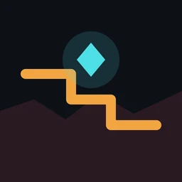
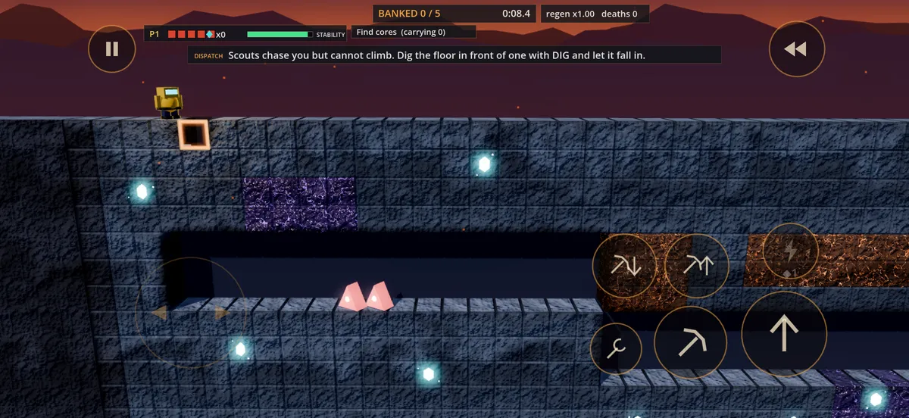
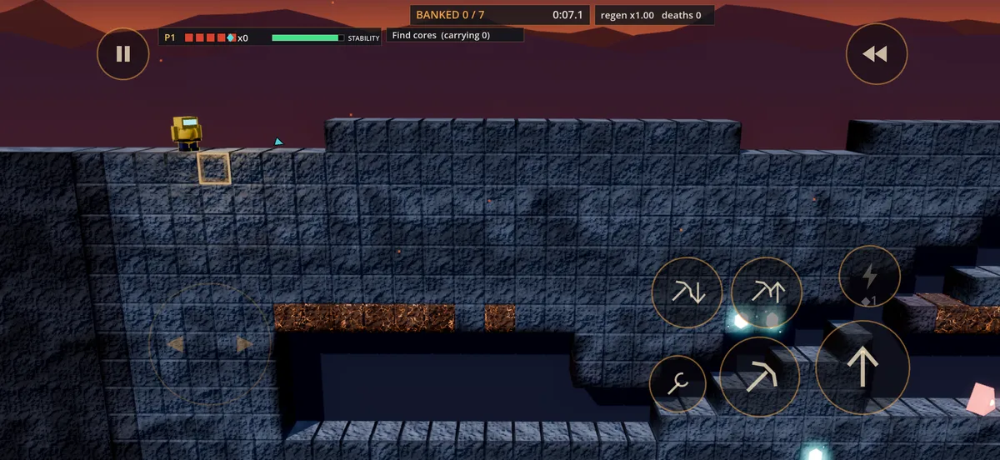
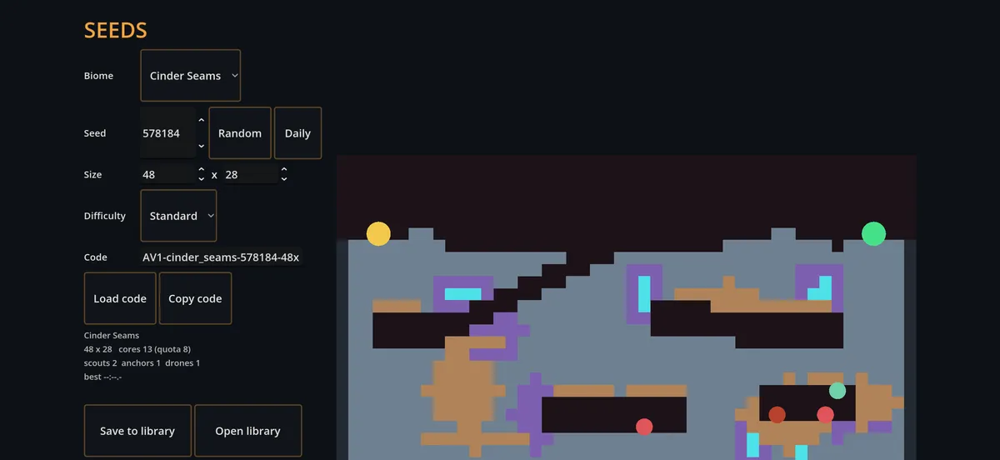

Ashen Veins
Dig. Trap. Extract.
You're a Vein Walker, sent deep into a mine whose walls repair themselves. Every hole you dig starts sealing again, so use it: dig in front of a warden, let it fall in, and slip past while it's stuck. Bank your cores and get out before the seam closes.
On TestFlight, coming to the App Store
What's inside
Campaign
Handmade and generated levels, from the Training Seam down, with a short story between them.
Seeds
Turn any number into a level. Share the code and race a friend on the same layout, or play the Daily seed.
Ghosts and co-op
Race a ghost of your best run, or team up online with a friend on the same network.


- ControlsTouch controls or a game controller
- AccessibilityColour-blind palettes, high contrast, UI size
- OnlinePlays offline; co-op over local network
- PrivacyNo ads, no account, no tracking
Privacy
Last updated November 2026.
What we collect
Nothing. Ashen Veins has no accounts, no ads and no analytics. Your progress, seeds, ghosts and settings are saved on your device and never sent to us.
Online co-op
When you host or join an online game, your device connects directly to the other player's device. There is no Clarke Studios server in between, and the two devices can see each other's network address while you play. iOS asks for local network permission the first time.
Community seed list
If you type a web address into the seed library, the game downloads the list of seeds from that address. It sends nothing else, and that site's own privacy policy applies.
Children
The game doesn't collect personal information from anyone, including children.
Changes
If a future version adds anything that collects data, we'll update this page and the App Store privacy details first.
Support
Email support@clarkestudios.com
Tell us your device, which level or seed you were playing and what happened. A real person reads every message, usually within two business days.
Why do my holes fill back in?
The lattice repairs itself, so every hole seals again after a few seconds. That's the puzzle: dig, use the hole, and keep moving.
How do I trap a warden?
Dig the floor in front of it and let it walk in. Scouts chase you but can't climb, so a fallen scout stays put until the hole seals.
Online co-op won't connect
Both devices need to be on the same Wi-Fi network, and Ashen Veins needs local network permission (iPhone Settings → Ashen Veins → Local Network). Host on one device, then join from the other using the address it shows.
Can I use a controller?
Yes. Connect any controller that works with your iPhone and the on-screen controls step aside.